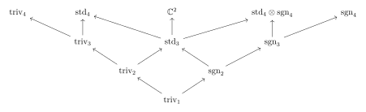
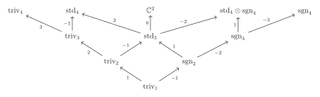
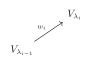

第 8 章：Okounkov–Vershik 对 S_n 表示的新方法
动机：\(\left\{1\right\}=S_1\subseteq S_2 \subseteq S_3\subseteq \cdots \subseteq S_{n-1}\subseteq S_n\subseteq \cdots\)，其中 \(S_k\) 可以视作 \(S_{k+1}\) 的子群（固定 \(k+1\)）。
§ 01Okounkov-Vershik 对 \(S_n\) 表示的新方法
1.1 中心化子 \(Z_B(A)\) 和表示的限制
设 \(A,B\) 是半单代数，\(\tau:B\rightarrow A\) 是同态，即对任意 \(A\) 的表示 \(V\) 均可表示为某个 \(B\) 的表示在 \(\tau\) 下的像。首先我们有
对任意 \(V\in \mathrm{Irr}(A),U\in \mathrm{Irr}(B)\)，令 \(M_{V,U}:=\mathrm{Hom}_B(U,V)\)，则
是 \(B\) 的表示。
现在我们的问题是如何计算 \(M_{V,U}\)。为此我们需要如下定义：
定义 1.1
定义中心化子(centralizer) \(Z_B(A)=\)
- 当 \(B=A\)，\(\tau=\mathrm{id}\) 时，\(Z_B(A)\) 即为 \(A\) 的中心。
- \(Z_B(A)\subseteq A\) 是子代数。
- \(Z_B(A)\) 在 \(M_{V,U}\) 上有自然的作用。具体而言，对 \(z\in Z_B(A),\varphi\in M_{V,U}\)，\((z\cdot \varphi)(u)=z(\varphi(u))\)。
引理 1.2
推论 1.3
以下两个命题等价：
- \(\forall U\in \mathrm{Irr}(B),V\in \mathrm{Irr}(A)\)，有 \(\dim \mathrm{Hom}_B(U,V)\le 1\)。
- \(Z_B(A)\) 交换。
证明
\(Z_B(A)=\bigoplus \mathrm{End}(M_{V,U})\) 交换 \(\Longleftrightarrow \dim M_{V,U}\le 1\)
注：于是作为 \(B\) 的表示 \(V=\bigoplus_{U,M_{V,U}\neq 0} U\)，所以 \(U\) 由 \(V\) 的子空间唯一确定。
1.2 \(Z_m(n)\) 代数
在本节中，我们考虑代数
其中 \(0\le m<n\)。首先我们有：
引理 1.4
设 \(H\subseteq G\) 是有限群，则
特别的，\(Z_{\mathbb{C}H}(\mathbb{C}G)\) 有基
证明
考虑 \(S_m\subseteq S_n\)，\(S_m\) 在 \(S_n\) 上的共轭作用为元素 \(1,2,\cdots,m\) 的置换，故 \(S_n\) 中的 \(S_m-\)共轭类为 \(m+1,\cdots,n\) 中元素的轮换。
例 1.5例
考虑 \(m=n-1\)，共轭类为 \((*, n)\)，包含了 \(\left\{(1,n),(2,n),\cdots,(n-1,n)\right\}\)，此时
其中 \(J_n\) 称为 Jucys-Murphy 元。
注意到 \(Z_m(n)\) 含有：
- \(\mathbb S_n\) 的中心 \(Z_m(m)\) 且 \(Z_m(m)\subseteq Z_m(n)\) 的中心。
- \(S_{[m+1,n]}=\left\{g\in S_n\Big| g(i)=i,\forall 1\le i\le m\right\}\)。
- 考虑 Jucys-Murphy 元 \(J_k:=\sum_{i=1}^{k-1} (i,k)\) 与 \(\mathbb{C}S_{k-1}\) 交换。故 \(J_{m+1},\cdots,J_n\in Z_m(n)\)。更进一步的，对 \(m+1\le k<l\le n\) 我们有 \(J_kJ_l=J_lJ_k\)，这是因为 \(J_l\in Z_{l-1}(l)\) 且 \(J_k\in \mathbb{C} S_{l-1}\)。
定理 1.6
代数 \(Z_m(n)\) 由 \(Z_m(m),\mathbb{C}S_{[m+1,n]},J_{m+1},\cdots,J_n\) 生成。
证明
之后补。
推论 1.7
我们有：
-
\(Z_{n-1}(n)\) 交换。
-
\(\forall U\in \mathrm{Irr}(\mathbb{C}S_{n-1}),V\in \mathrm{Irr}(\mathbb{C}S_n)\),
\[ \dim \mathrm{Hom}_{\mathbb{C}S_{n-1}} (U,V)\le 1 \] -
设 \(V \in \operatorname{Irr}(\mathbb{C}S_n)\)，则 Jucys-Murphy 元素 \(J_n\) 在 \(V\) 的每个不可约 \(\mathbb{C}S_{n-1}\)-子模上的作用均为标量乘法。
证明
\((1)\)：\(Z_{n-1}(n)\) 由 \(Z_{n-1}(n-1)\) 与 \(J_n\) 生成，且前者在 \(Z_{n-1}(n)\) 的中心里。
\((2)\)：由 \((1)\) 即得，且
\((3)\)：设 \(V=\bigoplus_i U_i\) 作为 \(S_{n-1}-\)表示，\(U_i\) 不可约。由于 \(J_n\) 与 \(\mathbb{C}S_{n-1}\) 交换，故
故 \(J_n\) 在每个 \(U_i\) 上作用均为标量。
1.3 分支图
对任意 \(V^n\in \mathrm{Irr}(S_n),U\in \mathrm{Irr}(S_{n-1})\)，由于 \(\dim \mathrm{Hom}_{S_{n-1}}(U,V^n)\le 1\)，我们可以将 \(V^n\) 唯一分解为两两不同构的 \(S_{n-1}-\)表示的直和。
定义 1.8
分支图(branching graph)是一个有向图，其顶点由所有的 \(S_n\) 表示的同构类组成，\(n\ge 1\)，有边 \(U\to V\) 当且仅当存在 \(n\) 使得 \(V\in \mathrm{Irr}(S_n),U\in \mathrm{Irr}(S_{n-1})\) 且 \(\mathrm{Hom}_{S_{n-1}}(U,V)\neq 0\)。
注：由于 \(U\subset V\) 当且仅当 \(U\otimes \mathrm{sgn}_{n-1}\subset V\otimes \mathrm{sgn}_n\)，于是张量积上一个 \(\mathrm{sgn}\) 表示给出了分支图的一个对称。
例 1.9例

Fig. 1交换图定义 1.10
对 \(V^m\in \mathrm{Irr}(S_m),V^n\in \mathrm{Irr}(S_n),m<n\)，在分支图中定义
定义 1.11
对 \(\overline{P}=(V^m\to V^{m+1}\to \cdots \to V^n)\in \mathrm{Path}(V^m,V^n)\)，记 \(V^m(\overline{P})\) 为 \(V^m\) 通过 \(V^m \to V^{m+1} \to \cdots \to V^n\) 的方式嵌入到 \(V^n\) 内部所对应的副本。故有
记 \(\varphi_{\overline{P}}:V^m\hookrightarrow V^n\) 为对应的嵌入，该嵌入在缩放意义下是唯一的。且 \(\varphi_{\overline{p}}\) 的像为 \(V^m(\overline{P})\)。
对于 \(m+1 \leq k \leq n\)，定义 \(w_k \in \mathbb{C}\) 满足
并称\(w_{\overline{P}} := (w_{m+1}, \cdots, w_n)\)为 \(\overline{p}\) 的权(weight)。
另一方面，\(\operatorname{Hom}_{S_m}(V^m, V^n)\) 是 \(Z_{m}(n)\) 的不可约表示。回顾：对 \(z \in Z_{m}(m)\) 和 \(\varphi \in \operatorname{Hom}_{S_m}(V^m, V^n)\) 有\((z \cdot \varphi)(u) = z(\varphi(u)), \quad \text{其中} u \in V^m\)。易验证 \(z \cdot \varphi \in \operatorname{Hom}_{S_m}(V^m, V^n)\)。因此，\(J_{m+1}, \cdots, J_n \in Z_{m}(n)\) 作用于 \(\operatorname{Hom}_{\mathbb{C}S_n}(V^m, V^n)\) 上。
引理 1.12
-
\(\left\{\varphi_{\overline{P}}\Big| \overline{P}\in \mathrm{Path}(V^m,V^n)\right\}\) 是 \(\mathrm{Hom}_{S_m}(V^m,V^n)\) 的一组基。
-
\(\forall m+1\le k\le n,\overline{P}\in \mathrm{Path}(V^m,V^n)\) 与 \(w_{\overline{P}} =(w_{m+1},\cdots,w_n)\)，则
\[ J_k \cdot \varphi_{\overline{P}} =w_k \varphi_{\overline{P}} \]
对 \(m=1\)，\(\mathrm{Hom}_{S_1}(V^1,V^n)=\mathrm{Hom}_\mathbb{C}(\mathbb{C},V^n)\cong V^n\)。\(\forall P\in \mathrm{Path}(V^n)\)，记 \(v_P=\varphi_P\in V^n\)。
推论 1.13
- \(\left\{v_P\Big| P\in \mathrm{Path}(V^n)\right\}\) 是 \(V^n\) 的一组基。
- \(\forall 1\le k \le n\)，\(J_kv_P=w_k\cdot v_P\)。
这里 \(w_1=0\)，\(w_P=(0,w_2,\cdots,w_n)\in \mathbb{C}^n\)。
例 1.14例
 Fig. 2交换图
Fig. 2交换图
推论 1.15
令 \(m<n\)，\(V^m\in \mathrm{Irr}(S_m),V^n\in \mathrm{Irr}(S_n)\)，\(\underline{P}\in \mathrm{Path}(V^m)\)，\(\overline{P} \in \mathrm{Path}(V^m,V^n)\)。设 \(P\in \mathrm{Path}(V^n)\) 为其串联 \(\underline{P}\overline{P}\)，则 \(v_P\) 与 \(\varphi_{\overline{P}} (v_{\underline{P}})\) 成比例。
1.4 权的唯一性
定理 1.16
令 \(P,P'\in \mathrm{Path}_n\)，若 \(w_P=w_{P'}\)，则 \(P=P'\)。
定义 1.17
令 \(wt_n:=\left\{w_P\Big| P\in \mathrm{Path}_n\right\}\)，称 \(w_P\) 与 \(w_{P'}\) 是表示等价的，若其均为两个不可约表示之间的道路的权。
1.5 改变道路
定义 1.18
设 \(P=(V^1\to V^2\to \cdots V^n)\in \mathrm{Path}(V^n)\)，对 \(1\le i \le n\) 定义
定理 1.19
令 \(w_P=(w_1,\cdots,w_n)\)，则
-
\(w_i\neq w_{i+1}\)
-
若 \(w_{i+1}=w_i\pm 1\)，则 \(\mathrm{Path}(P,i)=\left\{P\right\}\)
-
若 \(w_{i+1}\neq w_i\pm 1\)，则 \(\mathrm{Path}(P,i)=\left\{P,P'\right\}\)，且
\[ w_{P'}=(w_1,\cdots,w_{i-1},w_{i+1},w_i,w_{i+2},\cdots,w_n) \] -
若 \(i<n-1\)，且 \(w_i=w_{i+1}+1\)，则 \(w_{i+2}\neq w_i\)。
考虑 \(Z_{i-1}(i+1)\subset \mathbb{C}S_n\)，令
注意到 \(\left\{v_{P'}\Big| P'\in \mathrm{Path}(P,i)\right\}\) 是 \(V_{P,i}\) 的基。
命题 1.20
\(V_{P,i}\subset V^n\) 是 \(Z_{i-1}(i+1)-\)子模，且是不可约 \(Z_{i-1}(i+1)-\)模。
1.6 退化仿射 Hecke 代数 \(H(2)\)
定义 1.21
退化仿射 Hecke 代数(degenerate affine Hecke algebra )\(H(2)\) 由 \(X_1,X_2,T\) 生成，满足如下条件：
回忆 \(Z_{i-1}(i+1)\) 由 \(Z_{i-1}(i+1)\) 的中心、\(J_i\)、\(J_{i+1}\) 与 \((i,i+1)\) 生成。
引理 1.22
故存在代数同态 \(H(2)\to Z_{i-1}(i+1)\)，进而任意 \(Z_{i-1}(i+1)-\)模都是 \(H(2)-\)模。
推论 1.23
令 \(M\) 是不可约 \(Z_{i-1}(i+1)-\)模，则 \(M\) 也是不可约 \(H(2)-\)模。
可以证明 \(\left\{X_1^{d_1}X_2^{d_2}\sigma\Big| d_1,d_2\in \mathbb{Z}_{\ge 0},\sigma\in \left\{1,T\right\}\right\}\) 为 \(H(2)\) 的基，留做习题。
1.7 \(H(2)\) 的有限维不可约表示
令 \(M\) 为有限维不可约 \(H(2)-\)模。由 \(X_1X_2=X_2X_1\) 知其有相同的特征向量 \(m\in M\)，满足 \(X_1m=am,X_2m=bm,a,b\in \mathbb{C}\)。考虑 \(Tm\)，若 \(Tm,m\) 线性独立，则有 \(M=\mathrm{span}\left\{M,TM\right\}\) 且
另一方面，对于任意 \(a,b\in \mathbb{C}\) 上式满足 \(H(2)\) 的定义。于是这给出了一个 \(\mathbb{C}^2\) 上的 \(H(2)-\)模结构，记为 \(M(a,b)\)。
引理 1.24
\(M(a,b)\) 不可约当且仅当 \(a\neq b\pm 1\)。更进一步的，若 \(a\neq b\pm 1\)，\(M(a,b)\cong M(a',b')\) 当且仅当 \((a,b)=(a',b')\) 或 \((a,b)=(b',a')\)。
综合一下得到：
命题 1.25
\(H(2)\) 的有限维不可约表示由一对复数确定，\((a,b)\mapsto L(a,b)\)，其中 \(L(a,b)\cong L(b,a)\) 若 \(b\neq a,b\neq a\pm 1\)。在 \(L(a,b)\) 中 \((a,b)\) 对应 \(X_1,X_2\) 的特征向量。我们还有：
-
若 \(b=a+1\)，则 \(L(a,b)\cong \mathbb{C}\)，
\[ T\mapsto 1,X_1\mapsto a,X_2,\mapsto b \] -
若 \(b=a-1\)，则 \(L(a,b)\cong \mathbb{C}\)，
\[ T\mapsto -1,X_1\mapsto a,X_2,\mapsto b \] -
若 \(b\neq a\pm 1\)，则 \(L(a,b)\cong \mathbb{C}^2\)，
\[ T\rightarrow \left( \begin{matrix} 0& 1\\ 1& 0\\ \end{matrix} \right) ,X_1\rightarrow \left( \begin{matrix} a& -1\\ 0& b\\ \end{matrix} \right) ,X_2\rightarrow \left( \begin{matrix} b& 1\\ 0& a\\ \end{matrix} \right) \] -
\(X_1,X_2\) 在 \(L(a,b)\) 上作用是可对角化的当且仅当 \(a\neq b\)。
下面我们可以证明 \(\mathrm{Path}(P,i)\) 的分类定理
证明
下次补。
1.8 完成分类
现在我们利用 \(\mathrm{Path}(P,i)\) 的分类定理与 \(\# \mathrm{Irr}(S_n)=\# \text{共轭类}\) 来结束 \(\mathrm{Irr}(S_n)\) 的分类。
定义 1.26
一个 \(\mathbb{C}^n\) 上的可容对换(admissible transposition) 为
若 \(w_{i+1}\neq w_i\pm 1\)。
定义 1.27
我们称 \(\mathbb{C}^n\) 中的两个元素是组合等价的(combinatorial equivalent)，若其中一个可通过一系列可容对换得到另一个。此等价关系记为 \(\sim_c\)。
定义 1.28
一个组合权(combinatorial weight)为 \(\mathbb{C}^n\) 的一个元素，使得任意与其组合等价的元素 \((w_1,\cdots,w_n)\) 均满足：
- \(w_1=0\)
- \(w_i\neq w_{i+1},\forall 1\le i\le n-1\)
- \(\forall 1\le i\le n-2,w_{i+1}=w_i\pm 1\)
记 \(cwt_n\) 为所有组合权。
推论 1.29
- \(wt_n\subset cwt_n\)，且 \(wt_n\) 是一个组合等价类。
- 组合等价是表示等价。
于是我们有
引理 1.30
任意组合等价类均含有一个元素
这里 \(n_1\ge \cdots\ge n_k\ge 1\) 满足 \(\sum n_i=n\)。
这表明
结合上一不等式我们有
命题 1.31
- \(cwt_n=wt_n\)。
- \(\sim_c=\sim_r\)。
- 引理中的 \((n_1,\cdots,n_k)\) 由等价类唯一确定。
综上，对任意 \(V\in \mathrm{Irr}(S_n)\)，我们有元素 \(wt_n/\sim_r\) 与之对应，即某个 \(n\) 的分划 \(\lambda=(n_1,\cdots,n_k)\)，这表明 \(\mathrm{Irr}(S_n)\) 与 \(P_n\) 一一对应。
例 1.32例

Fig. 3交换图- \(\mathrm{triv}_4\)，仅有唯一的权 \((0,1,2,3)\)，得 \(\lambda=(4)\)。
- \(\mathrm{std}_4\)，有权 \(\color{red}{(0,1,2,-1)}\) \(,(0,1,-1,2),(0,-1,1,2)\)，得 \(\lambda=(3,1)\)。
- \(\mathbb{C}^2\)，有权 \(\color{red}{(0,1,-1,0)}\) \(,(0,-1,1,0)\)，得 \(\lambda =(2,2)\)。
- \(\mathrm{std}_4\otimes \mathrm{sgn}_4\)，有权 \(\color{red}{(0,1,-1,-2)}\) \(,(0,-1,1,-2),(0,-1,-2,1)\)，得 \(\lambda=(2,1,1)\)。
- \(\mathrm{sgn}_4\)，仅有唯一的权 \((0,-1,-2,-3)\)，得 \(\lambda=(1,1,1,1)\)。
1.9 Young 图
回忆，一个标准 Young 表 \(SYT(n)\) 为一种将 \(1,2,\cdots,n\) 填入 Young 表 \(Y_\lambda\) 中满足从上到下从左到右均严格递增。一个标准 Young 表 \(T\) 所对应的 Young 表被称为 \(T\) 的形状。
定义 1.33
对 \(SYT(n)\) \(T\)，定义其 content
其中 \((x_i,y_i)\) 为 \(i\) 对应的坐标。
可以证明 \(T\mapsto c(T)\) 是单射，留做习题。
命题 1.34
映射 \(T\mapsto c(T)\) 是 \(SYT(n)\) 与 \(cwt(n)\) 的双射。更进一步的，\(T\) 的形状等同于由 \(c(T)\) 所确定的划分。
推论 1.35
令 \(\lambda\in P(n)\)，\(V_\lambda\) 为其对应 \(S_n\) 的不可约表示。存在 \(V_\lambda\) 的基 \(\left\{v_T\Big| T\in SYT(n),T \text{ 形状为 } Y_\lambda\right\}\)，且 \(J_i\cdot v_T=(x_i-y_i)v_T\)，其中 \((x_i,y_i)\) 为 \(i\) 在 \(T\) 中的坐标。
推论 1.36
\(\lambda\in P(n)\)，则作为 \(S_{n-1}-\)表示
其中 \(\mu\) 遍历所有比 \(\lambda\) 少一个格子的 Young 表。更进一步的，\(J_n\) 作用在 \(V_\mu\) 为标量，其值为少的格子的 content。
定义 1.37
定义 Young 图为一个有向图，其顶点为 Young 表，\(\mu \to \lambda\) 当且仅当 \(\mu\) 比 \(\lambda\) 少一个格子。
推论 1.38
在 \(\bigsqcup_{n \geq 1} \operatorname{Irr}(S_n)\) 与 Young 表的一一对应关系下，分支图等于 Young 图。
注：利用 Young 图，很容易得到对 \(P\in \mathrm{Path}(V_\lambda)\) 的权 \(w_P=(w_1,\cdots,w_n)\)，因为我们直接有 \(w_i=\) \(\lambda_i\setminus \lambda_{i-1}\) 的 content。

Fig. 4交换图参考文献
- Pavel Etingof, Oleg Golberg, Sebastian Hensel, Tiankai Liu, Alex Schwendner, Dmitry Vaintrob, Elena Yudovina. Introduction to Representation Theory.
- Jean-Pierre Serre. Linear Representations of Finite Groups.
- William Fulton, Joe Harris. Representation Theory.
- Andrei Okounkovy, Anatoly Vershikz. A New Approach to Representation Theory of Symmetric Groups.
- Ivan Losev. Modern introduction to Representation theory.
评论